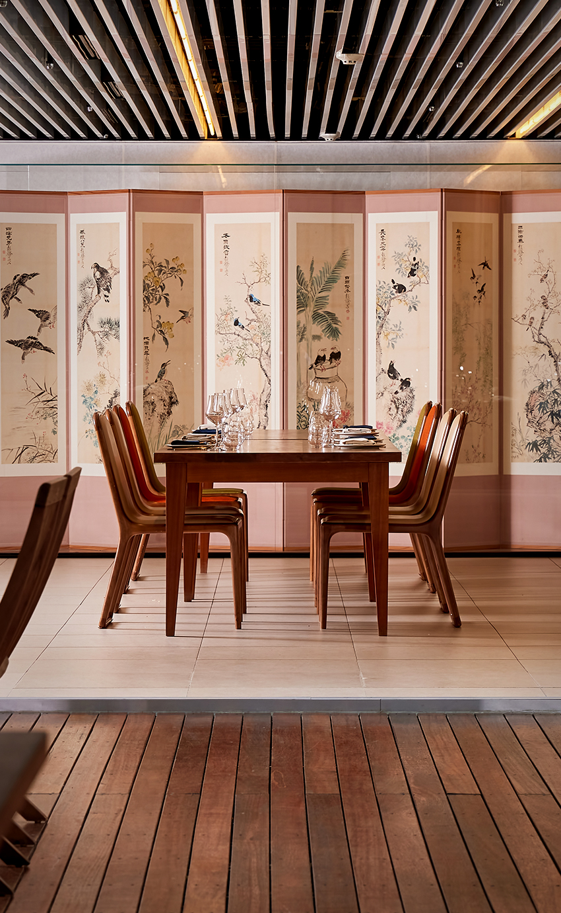
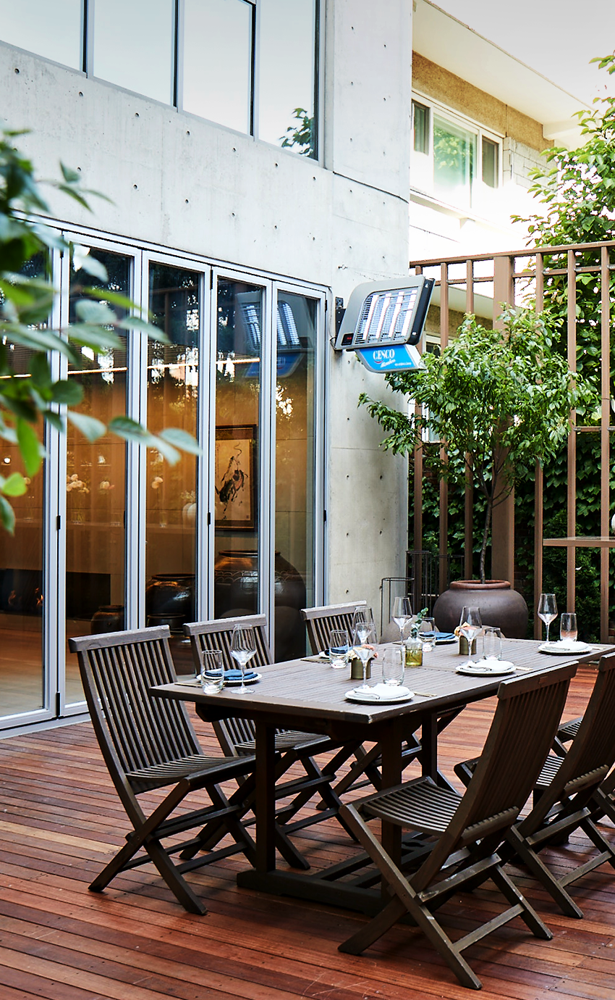

레스토랑 오늘에서 선보이는 우리 음식은 정통성에 기반을 두고 있으며
엄선한 식자재에 현대적인 조리법을 가미해 우리 음식의 본질에 더욱 충실하고자 합니다.
The culinary identity of restaurant o'neul is based on tradition, local ingredients and traditional cooking methods.
We strive to be innovative and respect the essence of tradition at the same time.
레스토랑 오늘에서 선보이는 우리 음식은 정통성에 기반을 두고 있으며 엄선한 식자재에 현대적인 조리법을 가미해 우리 음식의 본질에 더욱 충실하고자 합니다.
The culinary identity of restaurant o'neul is based on tradition, local ingredients and traditional cooking methods. We strive to be innovative and respect the essence of tradition at the same time.

Dinner 오늘 한상 차림
160,000 KRW
- 한입거리
- 오늘의 죽
- 노각 청포세면냉체
- 가지새우만두와 물김치
- 월과우엉잡채
- 건우럭 채소찜
- 숯불갈비와 해물꼬치구이
- 솥밥 / 민어매운탕 또는 평양냉면
- 쑥와플과 아이스크림
- 전통차

Special 오늘 셰프 스페셜 한상
220,000 KRW
- 한입거리
- 오늘의 죽
- 송이게살찜
- 세발낙지임자수탕
- 민물장어구이와 청국장소스
- 황기전복찜
- 된장양갈비와 등심구이
- 솥밥 / 민어매운탕 또는 평양냉면
- 쑥와플과 아이스크림
- 전통차
Signature Wine 95,000 KRW ~
Seasonal dining menu 시즈널 다이닝 메뉴
- 특정 음식에 대해 알러지가 있으시거나 메뉴조정을 원하시면 레스토랑 오늘로 연락 해주세요.
- 4인 이상 예약시 고객맞춤메뉴 제공 가능합니다. (최소 3일전까지 사전협의 시)
- Kindly advise us detailed information about food allergies or
special requests in advance. Price include tax and service charge.